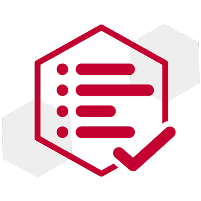
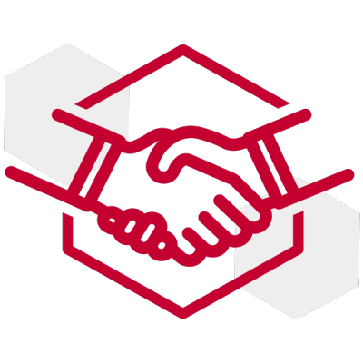
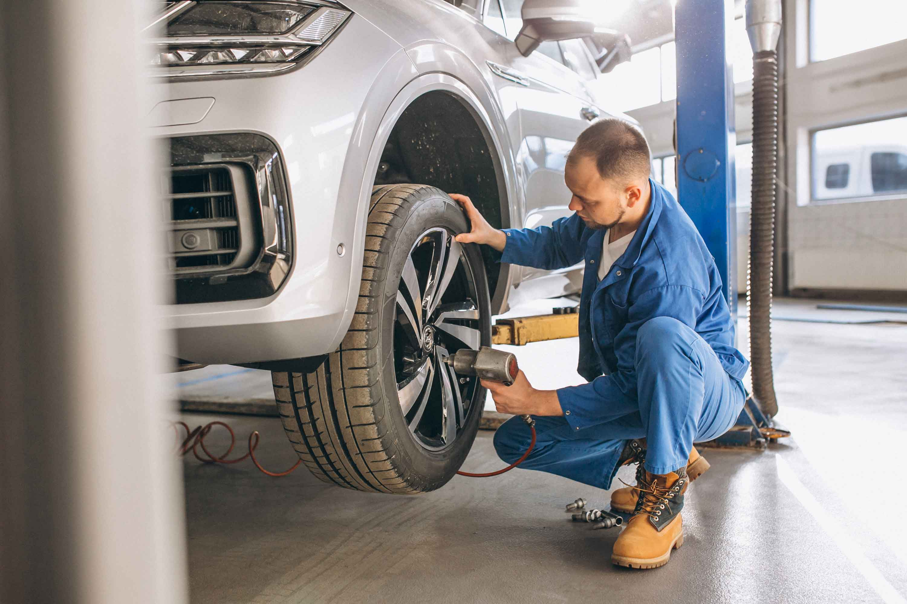

Revision de 20 Puntos
- Inspección del sistema de freno embrague y escape.
- Inspección del sistema de refrigeración.
- Lubricación de las cerraduras bisagras, más cerradura del baúl, rodillos y enganches de la puerta deslizante.
- Revisión del aceite de la caja de transferencia, nivel y fugas.
- Revisión del aceite de la transmisión manual, nivel y fugas.
- Revisión del aceite del diferencial, incluido LSD de tipo viscoso, nivel y fugas.
- Revisión del aceite del mecanismo de la dirección manual tipo RB nivel y fugas.
- Revisión del pedal del freno, freno de estacionamiento y embrague. Juego libre, carrera y funcionamiento.
- Revisión de la alineación de las ruedas. En caso de ser necesario permutarlas y balancearlas.
- Revisión de las pastillas, discos y demás componentes del freno.
- Revisión y corrección del fluido y de las cañerías de la servodirección, nivel y fugas.
- Revisión y corrección del líquido de frenos, embrague y transmisión automática. Nivel y fugas.
- Inspección de luces frontales, giros y guiños.
- Inspección de escobillas delanteras y traseras, estado y funcionamiento.
- Inspección de la batería con equipo especial de medición
- Revisión del sistema de aire acondicionado.
- Escaneo de la computadora interna con herramienta específica para diagnosticar fallos ocultos.
- Inspección de neumáticos: estado y desgaste.
- Inspección de cinturones de seguridad, tensión y retroceso del sistema.
- Revisión de Tren delantero y piezas móviles.
SERVICIO
El servicio de Posventa de PHOS CARS empieza apenas te retiras con tu nuevo vehiculo. Por medio de tecnologias confiables, ofrecemos una experiencia unica de servicio, donde nuestro objetivo es siempre darte la mejor atencion.
- PERSONAL CAPACITADO: Nuestros técnicos tienen la mejor preparación para darte el mejor servicio.
- ATENCION PERSONALIZADA: Te damos el servicio que merecés cubriendo todas tus necesidades.
- PUNTUALIDAD: En PHOS CARS tu tiempo es importante, por eso nuestro compromiso es respetarlo.
- CALIDAD: Tenemos calidad en todos lados, desde el servicio del personal hasta en los repuestos.
- OPCIONES DE PAGO: Podes utilizar el medio de pago que más te convenga.
MANTENIMIENTO Y SERVICIO
Con nuestro programa de mantenimiento, recibí el mejor cuidado para que tu vehiculo esté siempre en las mejores condiciones.
El programa de mantenimiento es la mejor herramienta para que tu vehiculo funcione de la mejor manera, nuestros técnicos revisan y analizan tu vehiculo para darle el mantenimiento que merece.
Para asegurar el óptimo funcionamiento de tu unidad, es recomendable realizar el programa de mantenimiento que PHOS CARS ofrece. El servicio de mantenimiento está disponible para aquellas unidades con garantías activas e inactivas, nuestros técnicos están capacitados en cada vehiculo que vendemos.
TRANQUILIDAD Y SEGURIDAD: dos de los innumerables beneficios que el servicio de mantenimiento de PHOS CARS ofrece.

GARANTIA EN MANTENIMIENTO, REPARACIONES Y REPUESTOS
Ofrecemos una garantía de 12 MESES, o 35.000 KM, lo que ocurra primero. Es importante llevar a cabo el plan de mantenimiento para conservar la garantía.
EQUIPO DE TECNICOS
Nuestros técnicos están constantemente capacitandose con programas de capacitación para mantenerse al día con el manejo de las nuevas tecnologías para darle a tu vehiculo el mejor cuidado.
COLISIÓN
En el caso de sufrir una colisión, en PHOS CARS ofrecemos las mejores soluciones para reparar cualquier unidad con precisión, de la manera más rapida, y sobre todo, a costos reducidos. Disponemos de repuestos oficiales e informacion precisa para que tu vehiculo vuelva a brillar.